Introducción

El agua es un elemento tan cotidiano que, con frecuencia, pasa desapercibido. Abrir el grifo, bañarnos, lavar, cocinar o simplemente beberla se convierten en gestos automáticos. Sin embargo, detrás de cada uno de estos actos existe una compleja red de decisiones, infraestructuras, ecosistemas y relaciones sociales que hacen posible que el agua llegue a nuestras manos.
Esta bitácora surge como un ejercicio de observación crítica y consciente sobre mi relación con el agua. Durante dos semanas registré mis hábitos diarios, identifiqué los momentos de mayor consumo y apliqué pequeñas prácticas de ahorro. También conversé con familiares y vecinos para reconocer cómo ha cambiado el acceso y la calidad del agua a través del tiempo.
Además, realicé observaciones de fuentes cercanas —como el grifo, el tanque de almacenamiento y una quebrada del sector— y analicé el recorrido que sigue el agua desde su origen hasta mi hogar, y de regreso hacia el ambiente una vez usada. Finalmente, ubiqué mi vivienda dentro de la cuenca hidrográfica que me sostiene, para reconocerme como actor dentro de ella y comprender que mi consumo no termina en mi casa: continúa su camino y afecta a otros seres y territorios.
Esta página web reúne ese proceso: mis registros, mis observaciones, las voces de quienes me rodean y las reflexiones que surgieron en el camino.
Más que un trabajo académico, este es un viaje personal para reconectar con el agua y entender el papel que juego en su cuidado.

Registro Semanal
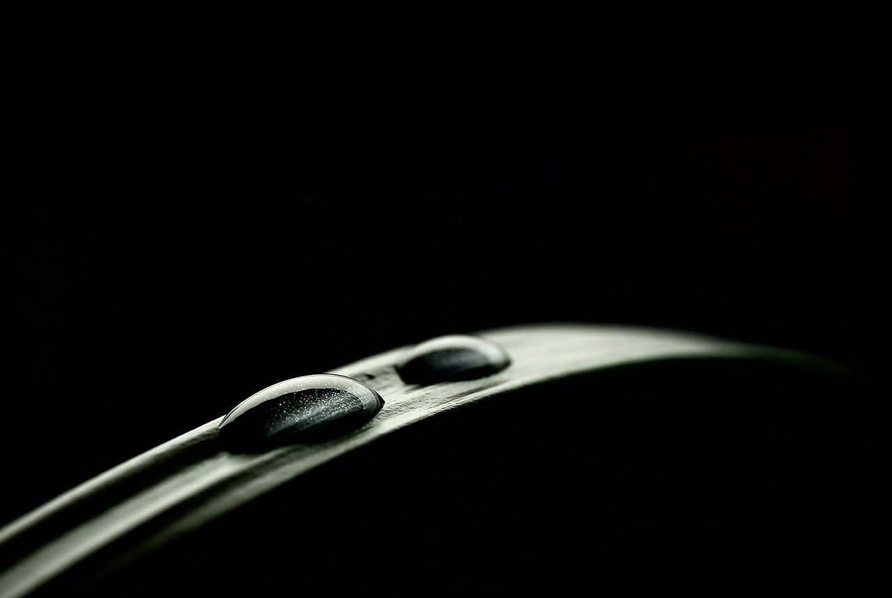
Semana 1 - Observación y registro del uso del agua
Durante la primera semana me dediqué únicamente a observar y registrar mi relación cotidiana con el agua, sin modificar mis hábitos. El objetivo fue reconocer patrones, identificar picos de consumo y entender mejor cómo el agua aparece en mi vida diaria.
- Uso del agua en mi rutina diaria
A lo largo de la semana registré cada momento en el que usé agua. Estos fueron los principales:
- Mañanas:
- Ducha (8-10 minutos)
- Cepillado de dientes
- Uso del inodoro
- Tardes:
- Lavado de manos
- Uso del inodoro
- Noches:
- Aseo personal
- Lavado de platos
- Uso del inodoro
- A lo largo del dia tambien hago uso del agua para hidratarme, aproximadamente entre 2 - 2,5 litros diarios.
Observación general: La ducha y el lavado de platos fueron los momentos de mayor consumo.
- Registro cuantitativo (estimado)
- Percepciones durante la observación
- El sonido del agua se volvió más evidente una vez empecé a poner atención
- Me sorprendió cuánta agua uso sin pensarlo: no solo es un recurso, sino un elemento invisible de mi rutina
| Día |
Actividad |
Tiempo / Cantidad |
Observaciones |
Prácticas de ahorro |
Reflexión |
| Día 1 |
Ducha, lavado de platos, cocina |
8 min ducha, 10 min lavado |
El agua salió fría al inicio |
Cerré la llave al enjabonar |
Inicio consciente; quiero reducir más el tiempo |
| Día 2 |
Ducha, limpieza del baño |
7 min ducha |
Usé más agua limpiando de lo esperado |
Reutilicé agua jabonosa para el piso |
Noté lo útil que es reutilizar pequeñas cantidades |
| Día 3 |
Cocina, lavado de platos |
8–10 min |
Cociné más, hubo más platos |
Lavado por tandas |
Pequeñas decisiones reducen bastante el consumo |
| Día 4 |
Ducha |
6 min |
Sin cambios |
Cierro la llave mientras me enjabono |
Día de bajo consumo |
| Día 5 |
Lavado de ropa |
1 ciclo lavadora |
Llené la lavadora completamente |
Uso de ciclo eco |
La lavadora bien usada evita desperdicio |
| Día 6 |
Cocina, platos, ducha |
7 min ducha |
Día normal |
Uso moderado del agua al cocinar |
La constancia es clave para un mejor hábito |
| Día 7 |
Riego de plantas |
2–3 L |
Día soleado |
Usé agua recolectada de lluvia |
La lluvia es una excelente fuente alternativa |
Semana 2 - Cambios, ajustes y acciones de ahorro
En la segunda semana implementé una serie de acciones sencillas de ahorro, buscando ver cómo estas pequeñas modificaciones influían en mi consumo.
- Cambios implementados
- Reducción del tiempo de ducha a 10 minutos acompañado
- Cerrar el grifo al enjabonarme las manos o los platos
- Recolectar agua de la lavadora para otros usos
- Evitar descargas innecesarias del inodoro
- Resultados y obsevaciones
- La ducha más corta no afectó mi rutina: fue la acción más fácil de mantener (mas con la compañia).
- Al lavar platos, cerrar el grifo redujo bastante el tiempo de agua corriendo.
- Reutilizar agua me hizo reflexionar sobre cuánta agua "limpia" se desperdicia sin necesidad
- Cambios percibidos en mi comportamiento
- Me volví más consciente del sonido del agua
- Empecé a pensar antes de abrir el grifo
- Desarrollé una relación más atenta y deliberada con este recurso.
| Día |
Actividad |
Tiempo / Cantidad |
Observaciones |
Prácticas de ahorro |
Reflexión |
| Día 8 |
Ducha, platos |
8 min ducha |
Más tiempo por frío |
Cerré la llave al enjabonarme |
El clima influye en el consumo |
| Día 9 |
Lavado de manos frecuente |
— |
Día ocupado |
Lavado rápido con poco caudal |
Los pequeños usos también suman |
| Día 10 |
Cocina, platos |
12 min |
Acumulé platos del día anterior |
Lavado por tandas |
La organización evita gastar de más |
| Día 11 |
Ducha |
6 min |
Ducha corta |
Cierre de llave al aplicar shampoo |
Pequeños ajustes ya son hábito |
| Día 12 |
Limpieza general |
— |
Tareas del hogar |
Usé balde en vez de manguera |
El balde reduce mucho el consumo |
| Día 13 |
Lavado de ropa |
1 ciclo |
Carga media |
Ciclo corto |
A veces no se puede optimizar todo |
| Día 14 |
Ducha, cocina, platos |
7 min |
Día normal |
Lavado eficiente |
Termino con más conciencia del ciclo del agua |
Estas tablas son tomadas del registro que se puede ver en este enlace
En la siguiente imagen vemos unos registros de como se recolecto agua, en el caso de agua lluvia, agua que sobrante en duchas y agua que se desecha a la hora de lavar ropa:
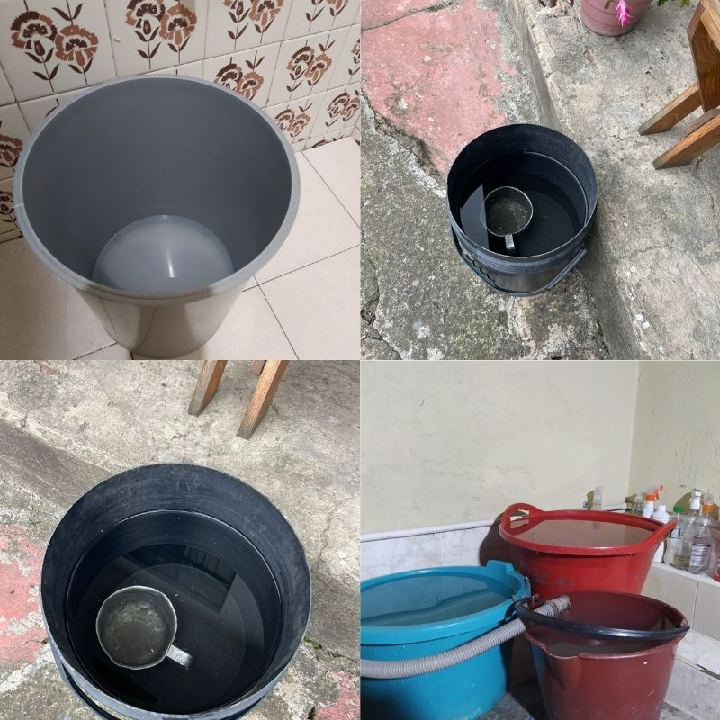
Conclusión del proceso
Estas dos semanas me permitieron entender que el consumo de agua no es un acto aislado: está profundamente conectado con mis hábitos, mis decisiones y la forma en que vivo cotidianamente. Antes de este ejercicio jamás había dedicado tiempo a observar cómo, cuándo y por qué uso el agua.
Registrar el proceso me hizo ver que el ahorro no depende de grandes acciones, sino de pequeños gestos conscientes que, acumulados, pueden generar un impacto significativo.

Observación de Campo
Durante estas semanas observé diferentes fuentes de agua que forman parte de mi entorno inmediato y otras un poco mas alejadas. Algunas son domésticas, otras comunitarias. Cada una me permitio ver en el agua desde un lugar distinto: como recurso, como infraestructura y como parte del territorio.
Represa y Rio Neusa
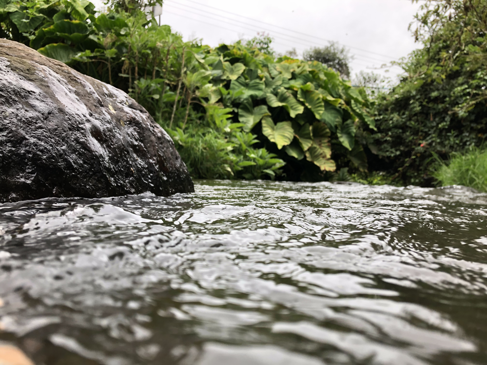
Tengo la oportunidad de visitar esta fuente hidrica ya que es bastante cercana al pueblo donde vivo. Lo que percibí:
- El agua era turbia, con tonos verdosos
- En las orillas del rio había bastantes rocas, mientras que en la represa se alcanzaban a divisar envolturas de plastico y otros residuos
- El olor era suave pero presente, una mezcla entre humedad y materia orgánica.
Reflexión: Esta quebrada evidencia las tensiones entre infraestructura urbana y ecosistemas naturales. Es un cuerpo de agua vivo, pero presionado por contaminación, basura y cambios en su cauce.

Parque acuático y de conservación Piscilago
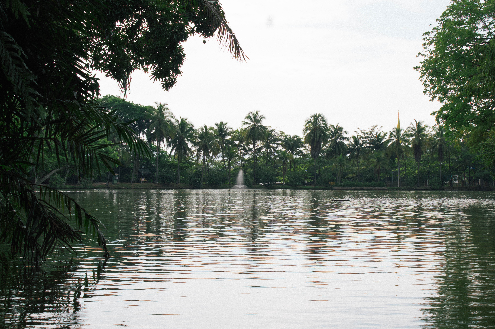
Durante la bitácora visité Piscilago, un parque acuático que funciona completamente alrededor del agua. Aunque su propósito es recreativo, observar este espacio desde una mirada ambiental me permitió ver cómo grandes cantidades de agua se integran en infraestructuras turísticas. Lo que observé:
- Las piscinas y atraccciones requieren volúmenes enormes de agua, que deben ser constantemente filtrados, limpiados y recirculados.
- El agua se mantiene cristalina, señal de procesos intensivos de tratamiento químico y mecánico.
- Hay zonas donde el olor a cloro es notable, recordando que la recreación también implica procesos de desinfección.
- Por otra parte, las zonas naturales tienen un contraste mas "natural" que muestra turbulencia, más integración con la naturaleza y más autonomía con lo que puede pasar dentro de ella.
Reflexión: Piscilago me permitió ver la otra cara del uso del agua; no solo como recurso básico para vivir, sino como ingrediente fundamental para la diversión, el ocio y el turismo.
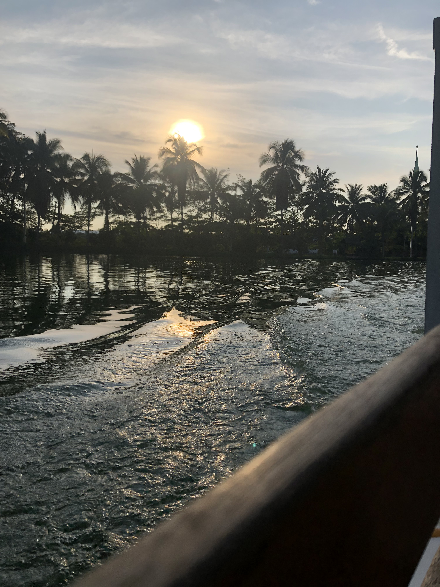
Cascada el Anillo - Ráquira

La visita a la Cascada el Anillo, ubicada en Ráquira, fue la experiencia más natural de todas las observaciones. A diferencia de las fuentes mas cercanas y el parque acuático, aquí el agua se presenta en su estado más libre y sencillo: corriendo entre rocas, vegetación y senderos sin una intervención humana dominante. Lo que observé:
- El agua bajaba con fuerza moderada, clara y con un leve tono verdoso característico de zonas andinas.
- El sonido de la cascada era constante y relajante, acompañado de un ambiente fresco y húmedo.
- En las orillas noté pequeñas algas, hojas y sedimentos naturales, sin señales evidentes de contaminación humana.
- El lugar cuenta con senderos y zonas visitadas, pero aún conserva un carácter tranquilo y limpio
Reflexión: La Cascada El Anillo representó el contraste más fuerte con los otros lugares observados. Aquí el agua no está confinada, tratada ni dirigida, sino que fluye según las dinámicas del ecosistema. Esto me hizo pensar en el papel del turismo en zonas naturales, lo fácil que es contaminar un espacio así si no hay educación ni cuidado comunitario.

Encuestas y entrevistas
Para esta bitácora conversé con familiares y personas cercanas del barrio para conocer cómo ha cambiado el acceso, la calidad y la percepción del agua a lo largo del tiempo. Las conversaciones revelaron diferencias generacionales, recuerdos contrastados y preocupaciones actuales.
Testimonio de familiar mayor (Madre)
Pregunta: ¿Cómo recuerdas el servicio de agua cuando eras joven?
Respuesta:
“Antes el agua llegaba menos tratada y con menos presión. En algunas épocas era normal que se fuera todo un día o que tocara llenar baldes por si acaso. En las mañanas a veces salía algo turbia y tocaba dejarla correr o hervirla. Igual uno se acostumbraba, pero no era tan confiable como ahora."
Pregunta: ¿Cómo ves el agua hoy?
Respuesta:
“Hoy es más limpia y casi nunca se va. Pero siento que hay menos conciencia: ahora todo el mundo usa más agua sin pensar. Y también está el miedo de que en unos años empiecen los racionamientos; ya se escucha de escasez en muchas partes."
Reflexión': Este testimonio muestra la transición entre un sistema menos tecnificado y uno más estable. Aun así, la estabilidad no elimina la preocupación por el futuro.
Testimonio de persona joven (Amigo)
Pregunta: ¿Piensas en tu consumo de agua cuando la usas?
Respuesta:
“La verdad, no mucho. Para mí abrir la llave y ya es normal. A veces sí trato de ahorrar, pero no es algo que tenga súper presente. Solo cuando escucho noticias de que los ríos están mal o que las represas están bajando."
Pregunta: ¿Qué te preocupa del agua hoy?
Respuesta:
“Que uno ve ríos sucios, quebradas llenas de basura… pero igual seguimos usando agua como si nada pasara. Es como vivir desconectados del problema."
Reflexión': La percepción de disponibilidad infinita está presente en esta generación. Hay consciencia ambiental, pero poca integración con la rutina.
Testimonio de vecina del sector
Pregunta: ¿Has notado cambios en el barrio respecto al agua?
Respuesta:
“Sí, últimamente siento que la presión baja en las noches y deja un olor leve, como a químico. No es fuerte, pero antes no pasaba. También con tanta construcción nueva, creo que el consumo en el barrio aumentó bastante."
Pregunta: ¿Te preocupa la calidad del agua?
Respuesta:
“Un poco. En general confío, pero uno sabe que las tuberías y el uso aumentan la contaminación. A veces me pregunto si realmente llega tan limpia como dicen."
Reflexión': Este testimonio conecta infraestructura, urbanización y calidad percibida: un tema clave dentro de la gobernanza del agua.
Las entrevistas revelan tres puntos clave:
- La percepción del agua ha cambiado con el tiempo. Antes se valoraba más porque escaseaba; hoy se siente más accesible, lo que a veces genera despreocupación.
- Hay una preocupación colectiva creciente. Aunque el agua llega con buena calidad, existen dudas por el aumento del consumo, urbanización, sequías y contaminación de fuentes cercanas.
- Eciste desconexión entre el consumo doméstico y el estado real de los cuerpos de agua. Muchas personas reconocen los problemas, pero no los relacionan directamente con sus hábitos diarios.
Reflexión personal sobre estas voces
Escuchar a quienes me rodean me hizo ver que el agua no solo es un recurso físico: también es una experiencia social compartida.
La memoria del agua cambia según la generación, según el barrio, según lo que se ha vivido.
Las voces del entorno reforzaron la idea de que la gobernanza del agua no se construye solo desde el acueducto o las instituciones, sino también desde la percepción, la confianza y los hábitos de cada persona.
Lo que cada uno cree, siente y hace influye directa o indirectamente en cómo se cuida —o se desgasta— este recurso.
Si deseas contribuir con el desarrollo de esta encuesta, puedes hacerlo dando click en el siguiente boton:
Encuesta!
A continuación vemos algunos de los resultados de la encuesta realizada:
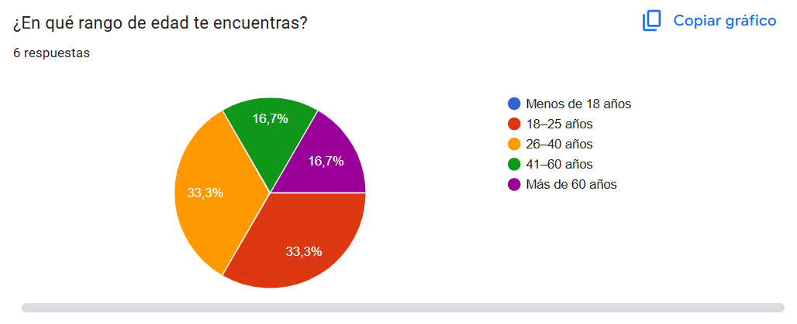
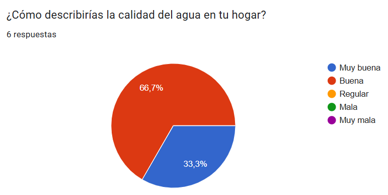
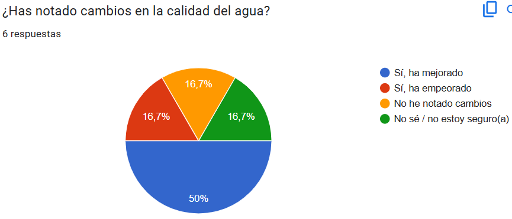
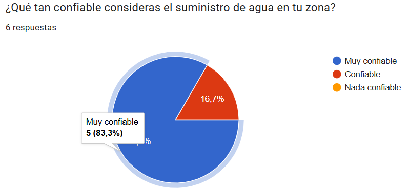
Ciclo del agua en mi vida
El agua que uso a diario no aparece mágicamente cuando abro un grifo. Forma parte de un recorrido mucho más amplio que involucra ríos, montañas, plantas de tratamiento, tuberías y, finalmente, mi propio hogar. Esta sección resume ese viaje: de dónde viene, cómo llega a mí y hacia dónde va una vez la uso.
¿De dónde viene el agua que uso en mi casa?
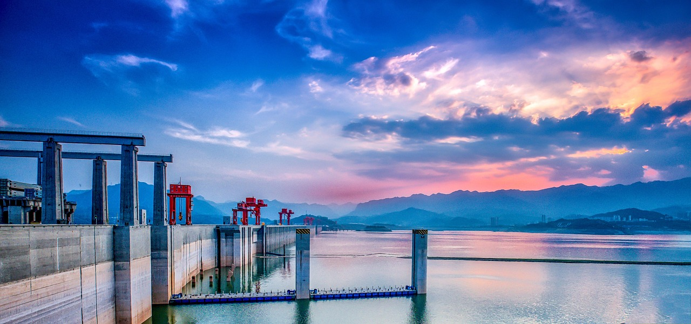
El agua que llega a mi hogar proviene del sistema de acueducto local, que capta agua de fuentes superficiales como:
- ríos,
- embalses,
- quebradas de montaña.
Estas fuentes son parte de la cuenca hidrográfica que abastece a la región, un sistema natural donde el agua fluye desde zonas altas hacia zonas bajas, alimentando ecosistemas, cultivos y ciudades.
Proceso previo a que llegue a mi casa:
- Captación: El agua se toma de un cuerpo de agua natural limpio (embalse o río).
- Conducción: Se transporta por canales o tuberías hasta una planta de potabilización.
- Tratamiento: Aqui pasa por procesos como: filtración, sedimentación, desinfección(cloro u otros métodos)
- Distribución: El agua ya potabilizada viaja por tuberías principales, luego por redes secundarias, y finalmente llega a las viviendas.
Reflexión: Detrás de cada vaso de agua hay una infraestructura compleja que depende del buen estado de las fuentes naturales. Cualquier deterioro de un río, quebrada o embalse afecta directamente la calidad del agua que uso.
¿Qué ocurre cuando el agua entra a mi casa?

Una vez dentro del hogar, el agua se distribuye hacia:
- Duchas
- Lavamanos
- Inodoros
- Cocina
- Lavadora
- Tanque de reserva
En esta etapa es donde mi huella hídrica personal se hace visible: mis hábitos, tiempos de uso y prácticas de ahorro determinan cuánta agua sale de la llave y cuántos litros regresan al sistema como aguas residuales.
¿A dónde va el agua después de usarla?

Después de ducharnos, lavar platos o descargar el inodoro, el agua no desaparece. Pasa a convertirse en agua residual, y su recorrido continúa:
Ruta de las aguas residuales:
- Baja por tuberías internas de la vivienda.
- Entra al alcantarillado sanitario del barrio.
- Se dirige hacia una Planta de Tratamiento de Aguas Residuales (PTAR), donde es limpiada para remover: materia orgánica, grasas, detergentes y sedimentos
- Una vez tratada, se devuelve a un río o cuerpo de agua cercano.
Importante: Si el sistema está sobrecargado o la gente vierte residuos tóxicos, la eficiencia disminuye y los ríos reciben agua menos tratada, afectando su salud.
La cuenca hidrográfica a la que pertenezco
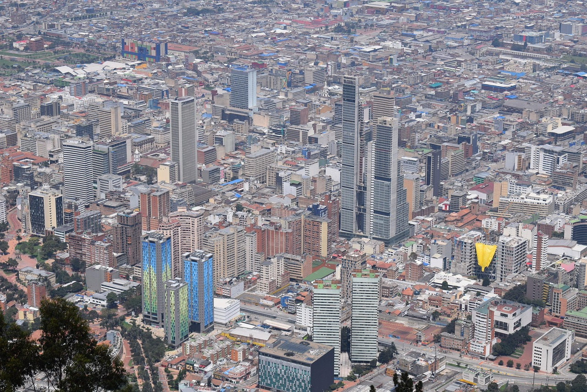
Zipaquirá hace parte de la Cuenca Alta del Río Bogotá, una de las cuencas más importantes y estratégicas de Cundinamarca. Esta cuenca recoge las aguas que nacen en los páramos y montañas que rodean la Sabana, y las conduce hacia el Río Bogotá, que atraviesa gran parte del territorio antes de desembocar finalmente en el Río Magdalena.
¿Qué significa estar dentro de esta cuenca?
- El agua que utilizo en mi hogar proviene en gran medida de fuentes abastecedoras conectadas a esta cuenca, incluyendo ríos, quebradas y sistemas de almacenamiento.
- Las lluvias que caen sobre Zipaquirá, así como el agua que corre por sus calles, quebradas y suelos, termina integrándose al sistema del Río Bogotá.
- Esto quiere decir que soy un actor directo dentro de este sistema, porque mis hábitos de consumo, el manejo de basuras y el uso responsable del agua influyen en la salud de la cuenca.
Conclusión de esta sección
El ciclo del agua en mi vida es un recordatorio de que todo está conectado: la quebrada que visito, la cascada que conozco, el tanque del conjunto, el parque acuático y el grifo de mi cocina forman parte del mismo sistema de agua.
Reconocer este ciclo me permite actuar con más responsabilidad, entendiendo que el agua que uso hoy seguirá su camino hacia otros seres, territorios y ecosistemas.

Perspectiva Crítica

Mi relación con el agua y los desafíos de la gestión hídrica en mi territorio
Después de analizar el viaje del agua en mi vida, escuchar a personas de mi comunidad y observar diferentes fuentes naturales y artificiales, comprendí que la gestión del agua en Zipaquirá y en la Cuenca Alta del Río Bogotá es un tema que va mucho más allá del consumo doméstico: es un asunto ambiental, social y político.
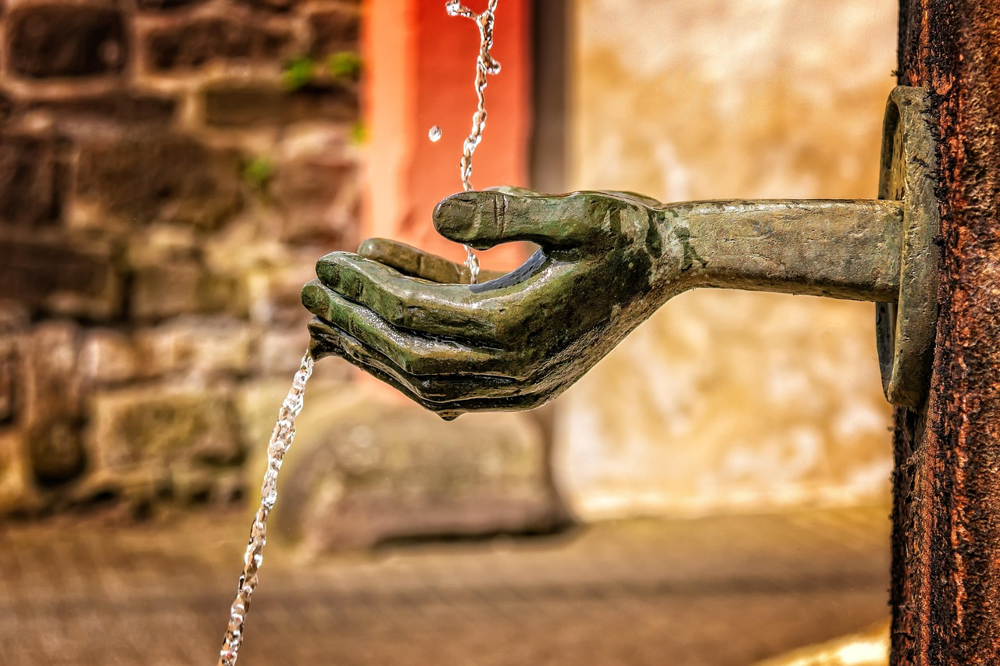
La paradoja del agua en mi entorno
Por un lado, en mi casa el agua llega de manera constante y con buena calidad, lo que podría dar la falsa impresión de que no existe un problema. Sin embargo, al observar las quebradas cercanas y escuchar a personas mayores del barrio, entendí que el sistema está lejos de ser perfecto:
- Las quebradas pequeñas como La Colorada o El Cardal muestran signos de deterioro.
- Aguas residuales, basuras y sedimentos continúan llegando a los afluentes.
- El crecimiento urbano está presionando más la infraestructura.
- El Río Bogotá, receptor final del agua que usamos, sigue siendo uno de los ríos más contaminados del país.
Esto refleja una desconexión entre la comodidad del consumo y la realidad ambiental del territorio.

La voz de la comunidad: memoria y preocupación
Las personas encuestadas y familiares con los que hablé coinciden en varios puntos:
- En el pasado, el servicio era menos constante y se producían más cortes.
- Hoy hay más presión sobre el agua debido al aumento de habitantes y actividades económicas.
- Se percibe una preocupación creciente por la contaminación y por el futuro del agua.
Estas voces demuestran que el agua no solo es un recurso natural, sino también un elemento que marca la memoria colectiva y la vida cotidiana del municipio.
Mi rol y responsabilidad en la cuenca
Entender que vivo dentro de la Cuenca Alta del Río Bogotá cambia la forma en que veo mi consumo. No soy un observador externo; soy parte del sistema:
- El agua que uso regresa a la cuenca como residual.
- Mis hábitos influyen en la demanda del recurso.
- Las quebradas locales dependen del comportamiento de todos.
Reconocerme como actor dentro de la cuenca me lleva a asumir una postura crítica sobre mis prácticas: aunque hago esfuerzos por ahorrar, también identifico momentos de uso excesivo y oportunidades de mejora.
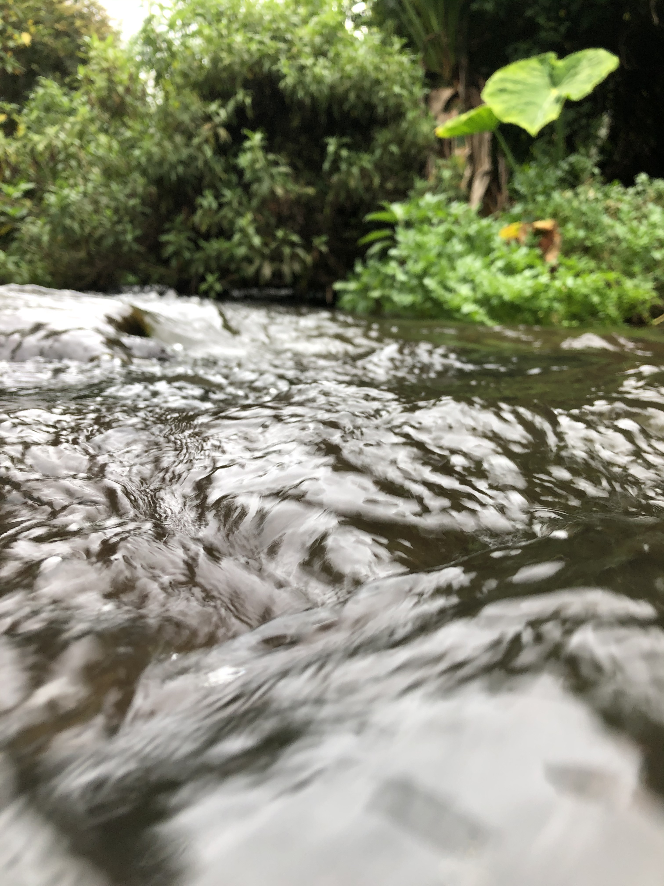
Lo que aprendí al visitar cuerpos de agua
-
Piscilago:
El agua es tratada, filtrada y regulada, pero el uso es intensivo y depende completamente de infraestructura. Me hizo pensar en el costo energético y de tratamiento que se requiere para mantener estas atracciones.
-
Cascada El Anillo (Ráquira)
El agua parecía limpia y en movimiento, pero también noté impactos turísticos: pisoteo, residuos y erosión. Aunque el paisaje es natural, sigue siendo vulnerable.
Ambos lugares muestran que incluso cuando el agua luce abundante, no es infinita ni está garantizada.
Conclusión crítica
Este proceso me hizo entender que la relación con el agua no es solo utilitaria, sino ética y territorial. El agua que uso todos los días proviene de un ecosistema real, con límites y con problemas. Me reconozco ahora como parte de la cuenca, como parte del problema y también como parte de la solución.
Conclusiones
A lo largo de este proceso comprendí que el agua no es solo un recurso que uso diariamente, sino un elemento que conecta mi vida con el territorio, la historia de mi comunidad y la salud ambiental de la región. Reconocer el viaje del agua (desde su origen en la Cuenca Alta del Río Bogotá hasta su paso por mi hogar y su retorno como agua residual) me permitió entender la complejidad del sistema hídrico en el que estoy inmerso.
-
El agua revela mi relación con el territorio
Descubrí que mis hábitos cotidianos tienen un impacto directo sobre las quebradas locales, los cuerpos de agua y, finalmente, el Río Bogotá. Cada ducha larga, cada descarga innecesaria o cada litro que desperdicio se suma al consumo colectivo y afecta la disponibilidad del recurso para otros. Esto me hizo reconocerme como un actor dentro de la cuenca, no como alguien externo a ella.
-
Las voces de la comunidad enriquecen la comprensión
Las personas que entrevisté recordaron épocas en las que el agua llegaba con menos presión o en horarios restringidos. Aunque el servicio ha mejorado, persisten preocupaciones relacionadas con la contaminación, el crecimiento urbano y la fragilidad de las quebradas. Estas voces me mostraron que el agua no solo es un tema ambiental: es un elemento social que atraviesa la vida de todos.
-
Observar cuerpos de agua permitió ver contrastes
Tanto en Piscilago como en la Cascada El Anillo pude ver dos dimensiones del agua: la infraestructura humana donde el agua se controla, filtra y dispone en grandes cantidades, y los ecosistemas naturales donde el agua fluye libre pero vulnerable. Ambos escenarios confirmaron que la abundancia del agua es una ilusión que depende de su buen manejo.
-
El ciclo del agua no funciona sin gobernanza
Entendí que la disponibilidad del agua no depende únicamente de procesos naturales, sino también de decisiones humanas: políticas públicas, mantenimiento de acueductos, educación ambiental, normativas y cultura ciudadana. La gobernanza ambiental es clave para garantizar la sostenibilidad del recurso, pero solo funciona si todos participamos.
-
Un aprendizaje personal para el futuro
La bitácora me permitió identificar mis momentos de mayor consumo y las prácticas que puedo mejorar. Ser consciente del agua que uso cada día me convierte en un actor responsable dentro de la cuenca. Ahora sé que los pequeños hábitos individuales —como cerrar la llave, reutilizar agua o reducir tiempos de ducha— tienen impacto real en la salud hídrica del territorio.
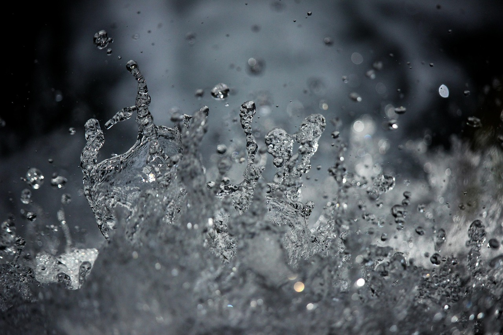
Esta bitácora transformó mi percepción del agua: pasó de ser algo cotidiano y “seguro” a ser un recurso vivo, vulnerable y profundamente conectado con mi entorno. Comprendí que el bienestar de la cuenca es también mi bienestar, y que la protección del agua es una responsabilidad que compartimos como comunidad.
Cuidar el agua es, en última instancia, cuidar la vida, el territorio y nuestro futuro colectivo.